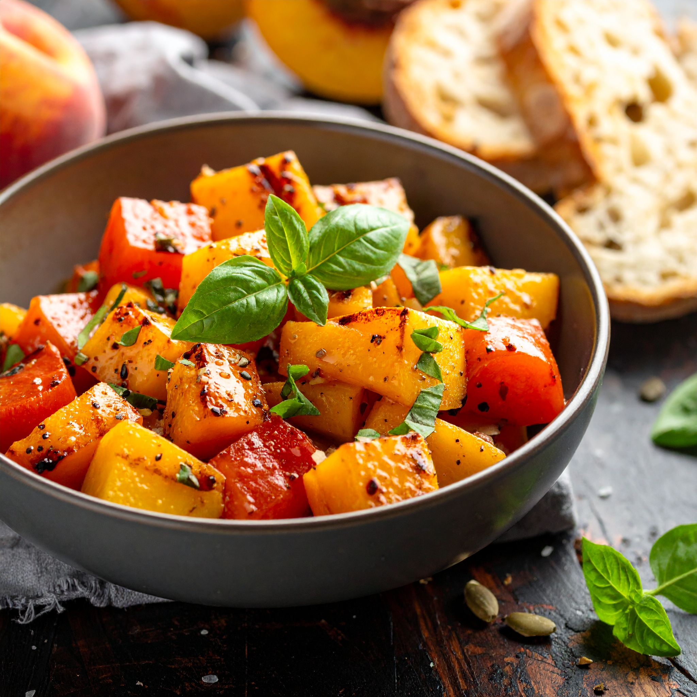

Grilled Peach Bruschetta

A fresh twist on a classic appetizer featuring smoky grilled peaches. I love to layer this over a creamy vegan ricotta, and topped with a drizzle of balsamic glaze. Finished with a sprinkle of fresh basil on toasted sourdough for the perfect balance of sweet, savory, and tangy flavors.
Ingredients
Bruschetta
- 2 fresh peaches (canned works too!)
- 2cup (300g) cherry tomatoes, diced
- 1 garlic clove
- 1/2cup (8g) fresh basil leaves, chopped
- 1TBS (15ml) extra-virgin olive oil
- 1/8tsp salt
- 1/8tsp ground black pepper
Assembly
- Desired amount of Vegan Ricotta (see recipe here
- 4 slices sourdough bread
- Balsamic Vinegrette Glaze to preference
Directions
- Bring a grill pan to medium-high heat. Then cook the peaches until deeply caramelized, around 3 - 4 minutes on each side. Set aside to cool down slightly.
- Add the remaining bruschetta ingredients to a large bowl. Set aside.
- Once cool enough to handle, dice the peaches.
- Add them to the bowl and stir to combine. Set aside
- Heat the oil in a grill pan over medium heat. Toast the bread slices until golden on both sides. (or toast)
- To assemble, spread the vegan ricotta on the toasted bread and top with the peach and tomato mixture. Enjoy!
This recipe is originally from Pick Up Limes
Go Home